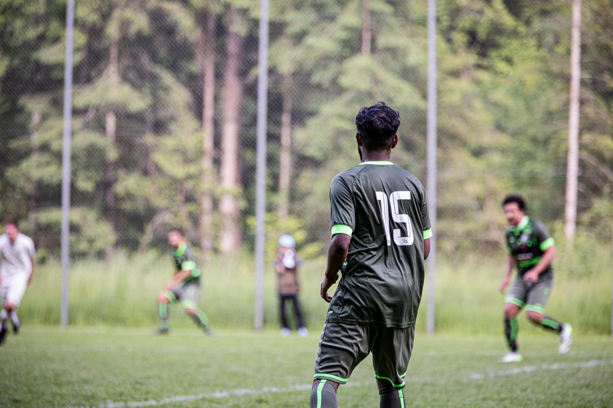
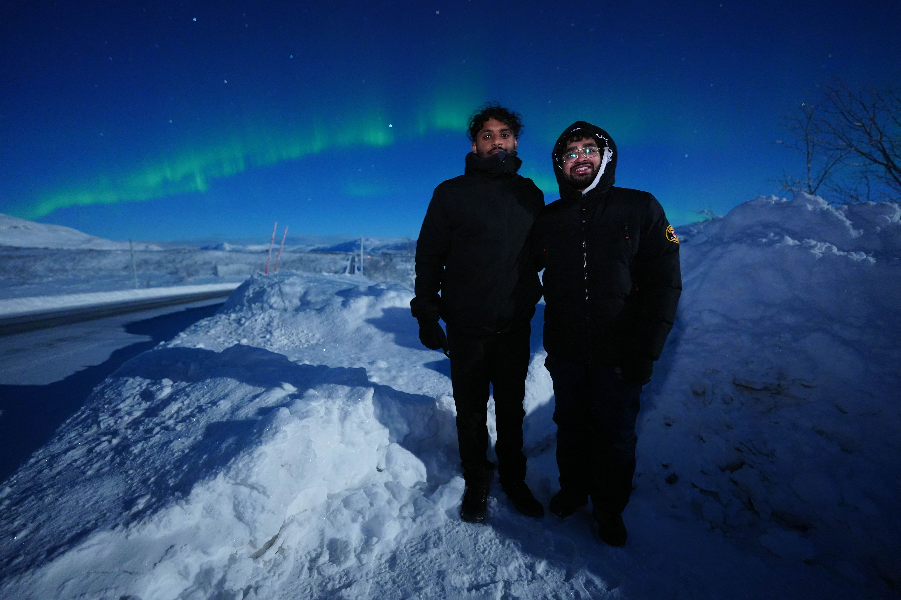

Hobbys
Hier kannst du deine Interessen schön präsentieren — inklusive kleiner Filter-Funktion.
Fußball

Auf dem Feld fühle ich mich zuhause. Ich spiele für den FC Schwarzenburg – Teamgeist, Ausdauer und Spass stehen im Vordergrund. Fussball ist mein Lieblingssport.
Reisen

Die Aurora Borealis in Norwegen zu sehen, war magisch. Reisen erweitert meinen Horizont und schafft Erinnerungen für’s Leben.